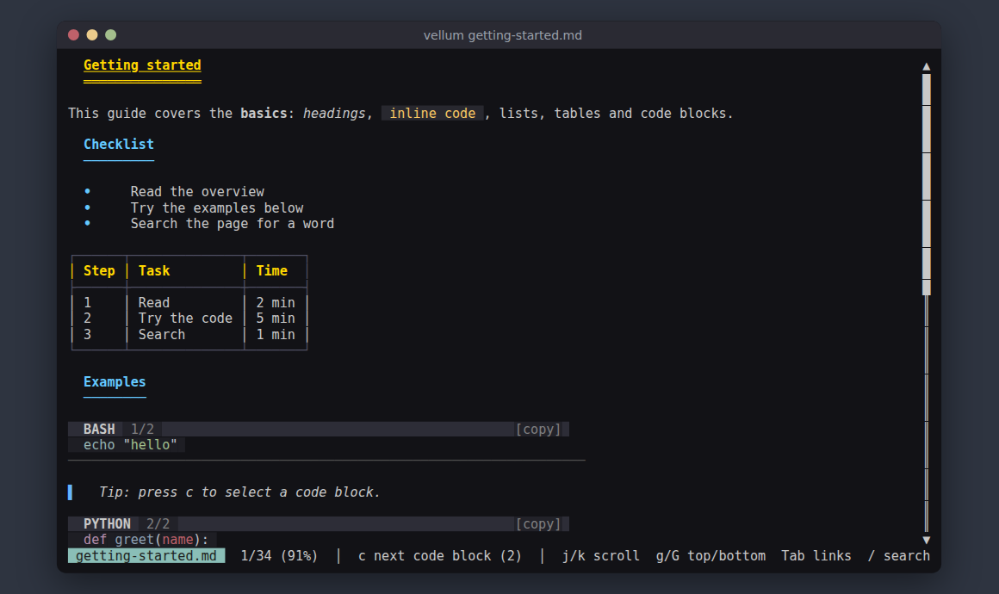

Markdown, read in the terminal
Read Markdown without leaving the shell.
vellum is a terminal Markdown viewer written in Rust. It renders headings, tables, lists, quotes, syntax-highlighted code, inline images and links in a full-screen TUI, and lets you search the text and copy code blocks to the clipboard.
$EDITOR and come back when you close it.

What it does
Renders the whole document
Headings H1 to H6 in distinct colours, bold, italic, strikethrough, inline code, tables, nested lists, block quotes and rules. Long lines wrap at the terminal edge.
Highlights code
Fenced code blocks are syntax-highlighted. Select one with c or a click, then copy it with y. Over SSH the copy lands in your local clipboard.
Shows images
Inline images through the Kitty, Sixel or iTerm2 protocols, with a half-block fallback anywhere
else. Video links get a thumbnail when ffmpeg is installed.
Follows links
Tab walks the links. Anchors jump inside the page, local .md files open
in place, and Alt+Left goes back.
Searches the text
/ finds a plain-text string, case-insensitive, and highlights every match. n and N step through them.
Makes no network requests
Opening a document fetches nothing. Remote images load only with --remote-images,
over https, and never from private or loopback addresses.
Quick start
On macOS or Linux with Homebrew:
brew tap nikolareljin/tap
brew install vellum
vellum README.mdAnywhere with a Rust toolchain:
cargo install --locked --git https://github.com/nikolareljin/vellum --bin vellumDebian and Ubuntu packages, prebuilt binaries and a Windows build are on the install page. Once it is open, j/k scroll, / searches and q quits. The usage page lists every key.
Requirements
- A terminal with 24-bit colour for the intended look. Any terminal works.
- Optional: a terminal with Kitty, Sixel or iTerm2 graphics for full-resolution images.
- Optional:
ffmpegfor video thumbnails. - Optional:
wl-copy,xcliporxselon Linux for copying without OSC 52. - Rust 1.79 or newer, only when building from source.
Companion tools
NikOS
An AI workstation built on Ubuntu LTS.
Distrodeck
Portable Linux workstation management.
IsoForge
Linux image download and USB flashing.
ai-runner
Archive landing page for a local Ollama runner.
KioskFrame
Photo-frame and dashboard appliance.